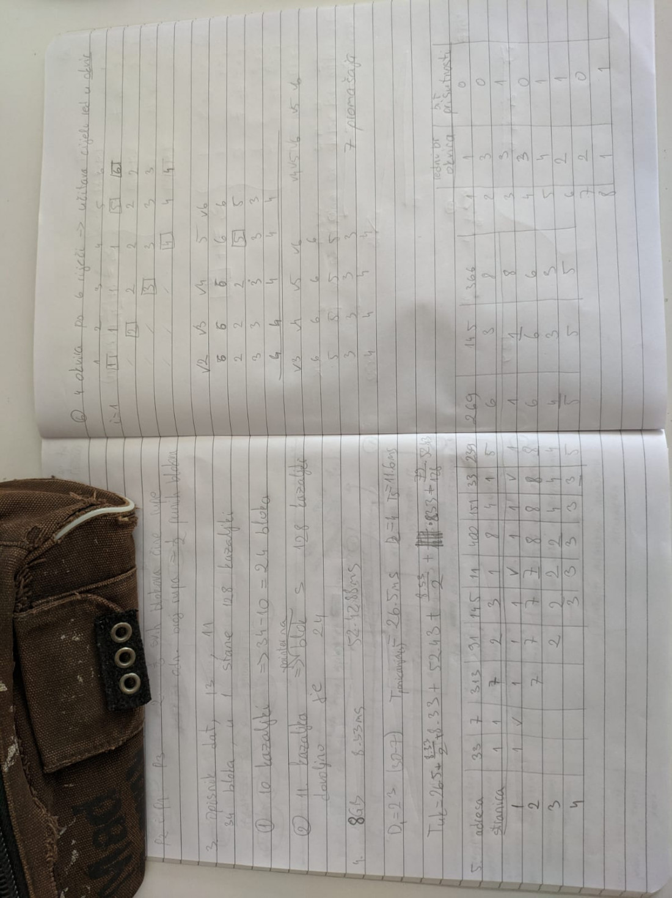
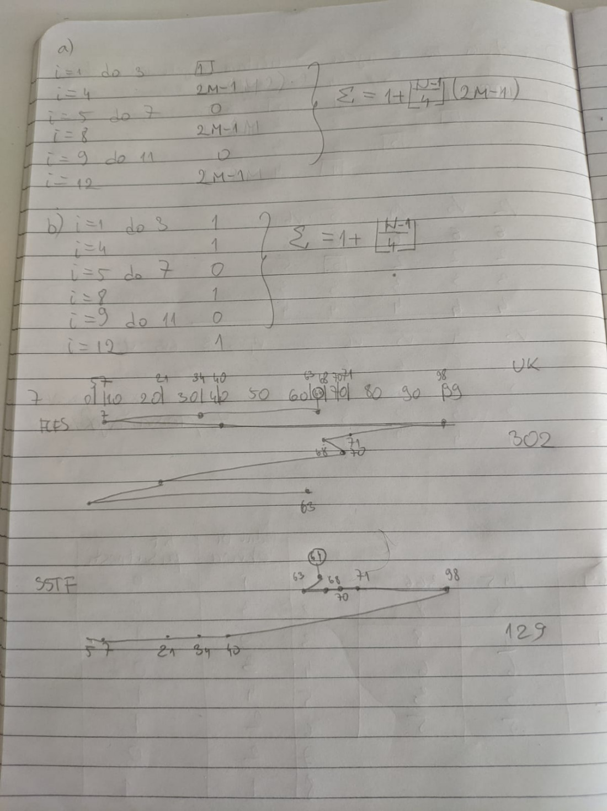
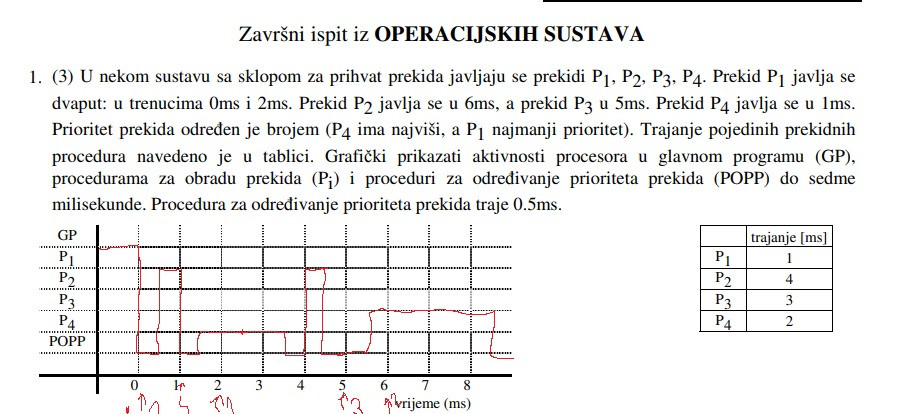
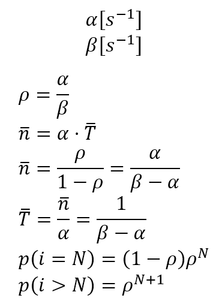
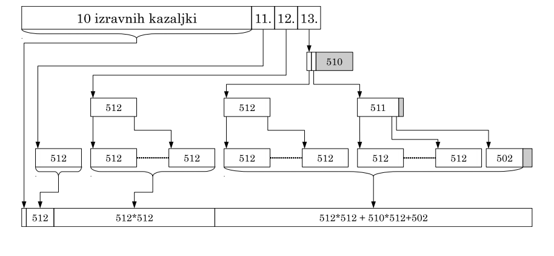

Ima netko 12. zadatak iz prvog ispita?
Možda previše tražim, ali je li neko riješio ove primjere za ZI, da pošalje, znam da ima gore poneki zadatak, ali ako je netko dobra duša da pošalje Zahvaljujem 😃
Šćap Malo je neuredno i bez postupaka, ali evo ako pomaze.
  
Janez kolega Zasluzujete 72 djevice bili Vi te vjere ili ne
Šćap Samo Nam vrnite Piranski zaliv in zadovoljen sem.
Ovo sam si pisao za blic, nadam se da je sve dobro 
 Moze netko objasniti koliko memorije npr u ovom slucaju zauzimaju kazaljke? Znam rijesit zadatak do tog kad se broji koliko mem zauzimaju, ne kuzim kako to broje tocno, svaka kazaljka je 4B
DnkCkv Mislim da se u obizir uzimaju svi blokovi koji se zauzmu, pa zbrojis njihovu memoriju. Jer ako se zauzme npr samo jedna kazaljka u bloku, svejedno se zauzme cijeli blok.
DnkCkv svaka kazaljka je 8B u tom zadatku
helenic I onda ti zapravo do druge for petlje dođe 8 procesa, tj 8 dretvi, i svaki od njih stvori još po 3 dretve, tako da bih rekao da je odgovor da na kraju budu 32 dretve.
8*3=24? ili sam ja neš krivo skužio
Sulejman + 8 instrukcijskih dretvi jer stvaranjem svakog novog procesa nastaje 1 njegova dretva = 32
MA aha i to se računa u rješenju?
Sulejman Da, traži se ukupan broj dretvi, a ne koliko ih je stvoreno s pthread_create. I navedeno je u zadatku da je u početku jedna, to je instrukcijska dretva prvog procesa koji pokreće program.
Zna li netko koliko dugo traje završni?
Možda bi mi bilo lakše riješiti ispit da sam uzeo kalkulator
Nisam u zivotu ovako brzo rjesio 1. Stranicu i izletio sa sigurnim prolazom
Kako ste rijesili onaj s forkanjem i pthreadom?
fairlyamusing 4xA, 4 procesa, 12 dretvi.
MA jel moze neko potvrdit jel ovo tocno
MA hvala, ja sam mislio da je su 3 procesa jer glavni proces nije prosao prvi if, al valjda sam nes zaboravio
Isusek isto sam ti i ja dobio, ali opet ne uzimaj me za riječ